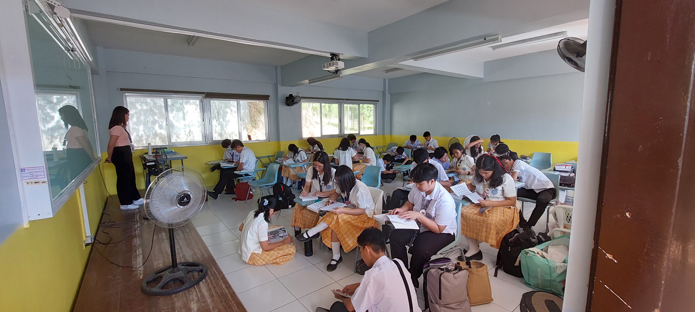

Canterbury High School is a prominent educational institution located in the heart of a bustling city.
The school boasts state-of-the-art facilities, modern classrooms, and a spacious campus that provides ample opportunities for students to learn and grow.
The school's academic programs are diverse and comprehensive, catering to students with varying interests and abilities.
From traditional subjects like English, Math, and Science to more specialized courses in the arts, technology, and business, Canterbury High School offers a wide range of options that prepare students for success in their future endeavors.

The school's faculty is made up of highly qualified and experienced teachers who are committed to providing their students with the best possible education.
They employ innovative teaching methods that foster critical thinking, problem-solving, and independent learning, ensuring that students leave the school with the skills and knowledge they need to succeed in their chosen fields.
Canterbury also places emphasis on extracurricular activities and community involvement.
The school offers clubs, sports teams, and volunteer opportunities that allow students to develop leadership skills and build teamwork abilities.